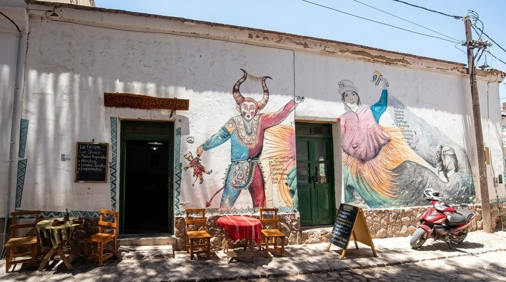

Nuestra carta
Empanadas, tamales, locro y otros platos de la cocina de la Quebrada.
Ver el menúCocina regional en el corazón de Humahuaca.
Hay lugares que se visitan y lugares que se recuerdan. Nosotros queremos ser ambos.

Somos un emprendimiento gastronómico de Humahuaca. Preparamos platos y bebidas de la cocina regional con recetas tradicionales, productos de la zona y atención personalizada.
Recibimos a quienes viven en la Quebrada y a quienes la visitan por primera vez.
Empanadas, tamales, locro y otros platos de la cocina de la Quebrada.
Ver el menúParedes de adobe, textiles andinos y el ritmo tranquilo de Humahuaca.
Conocer la experiencia